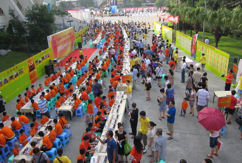
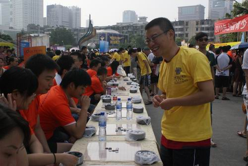
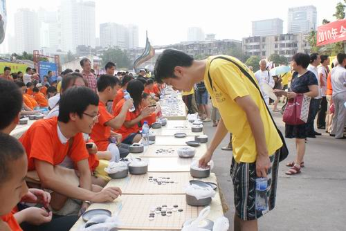
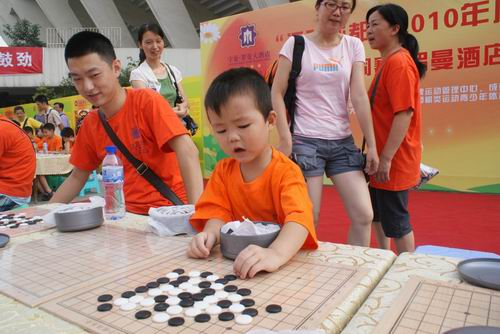

“运动成都”全民健身掀热潮 五子棋迷踊跃猜棋下棋
#1 “运动成都”全民健身掀热潮 五子棋迷踊跃猜棋下棋 作者：秋叶散人 发表时间：2010-8-9 11:38:15
北京时间8月8日，“运动成都”全民健身日活动、“运动成都”全国棋牌项目万人同赛成都市分会场、全国青少年棋类夏令营在成都市体育中心举行。大约有四、五百名成都棋迷以及棋类爱好者，踊跃参加了成都棋院精心布置和准备了一个多月的各类形式新颖、参与性极强的棋类互动活动，成为当日市体育中心全民健身日活动现场的一大焦点。
8月8日上午7点，成都棋院全体工作人员抵达活动现场，大家各司其责，完成最后的布置工作；7点30分，400多名爱好者陆续涌入活动中心，此时距离活动开始时间8:30还有整整1小时。进入场地的爱好者会发现今年在宣传上有别去年，活动两旁皆有30米长的宣传展板，一边是展示成都棋类活动的图片以及文字介绍，另一边则是浩浩荡荡、密密麻麻的棋局。“妈妈，快过来看，是有奖征答，我要解这道题，我要拿奖。”活动还没开始，就有小棋迷跃跃欲试。此时人潮涌动，越来越多的人群涌向有奖征答的棋局处，这让工作人员不得不临时将“桌布”拿来应急，暂时盖上，锁定棋局，待车轮战和对抗赛结束后，再让它抛头露面。

活动现场
四川五子棋教练陈新（风尘）在有奖竞猜区接受棋迷的解答。
烈日下的风尘终于“湿身”了——确实很热很辛苦哈！

任继航职业四段在车轮战中谈笑风生

聂淼职业三段在车轮战中兢兢业业

五子棋未来的希望！
［此帖子已被 秋叶散人 在 2010-8-9 11:44:49 编辑过］
［此帖子已被 秋叶散人 在 2010-8-9 11:51:59 编辑过］
［此帖子已被 秋叶散人 在 2010-8-9 12:08:36 编辑过］
［此帖子已被 秋叶散人 在 2010-8-9 12:15:14 编辑过］
［ 无尽 于 2010-8-9 12:15:39 时奖励此帖[金币加 20 威望加1］
［ 掌棋宣传员 于 2010-8-9 14:27:23 时花20金币送鲜花一朵］
［ 掌棋宣传员 于 2010-8-9 14:27:29 时花20金币送鲜花一朵］
#2 Re:“运动成都”全民健身掀热潮 五子棋迷踊跃猜棋下棋 作者：水月 发表时间：2010-8-9 11:47:49
好像很好玩～～～最后一张小朋友好严肃啊～好像已经5连了。。。
#3 Re:“运动成都”全民健身掀热潮 五子棋迷踊跃猜棋下棋 作者：掌棋宣传员 发表时间：2010-8-9 14:27:58
好庞大的场面,不错不错,真的很不错!#4 Re:“运动成都”全民健身掀热潮 五子棋迷踊跃猜棋下棋 作者：啊呆 发表时间：2010-8-9 15:04:26
好羡慕呀 希望全国各地都举办~ 最后一张好强啊 中国未来的棋神非他莫属了#5 Re:“运动成都”全民健身掀热潮 五子棋迷踊跃猜棋下棋 作者：路痴 发表时间：2010-8-9 16:13:18
那天。。真的很热。。。［ 掌棋宣传员 于 2010-8-9 23:04:39 时花20金币送鲜花一朵］
［ 掌棋宣传员 于 2010-8-9 23:04:56 时花20金币送鲜花一朵］
#6 Re:“运动成都”全民健身掀热潮 五子棋迷踊跃猜棋下棋 作者：贰零壹壹年再入五 发表时间：2010-8-9 16:41:17
好，有什么活动就去报料，去报道。五子棋才会越来越被重视，四川的几位教练辛苦了。
［ 掌棋宣传员 于 2010-8-10 15:37:59 时花20金币送鲜花一朵］
#7 Re:“运动成都”全民健身掀热潮 五子棋迷踊跃猜棋下棋 作者：颠覆小忧 发表时间：2010-8-19 16:39:59
五子棋的发展要靠我们一起来努力，路漫漫其修远兮，吾将上下而求索！#8 Re:“运动成都”全民健身掀热潮 五子棋迷踊跃猜棋下棋 作者：萱萱 发表时间：2010-8-21 9:27:26
同感，同感，大家一起努力！！！#9 Re:“运动成都”全民健身掀热潮 五子棋迷踊跃猜棋下棋 作者：杀手 发表时间：2010-8-25 3:08:38
身材都保持的不错啊